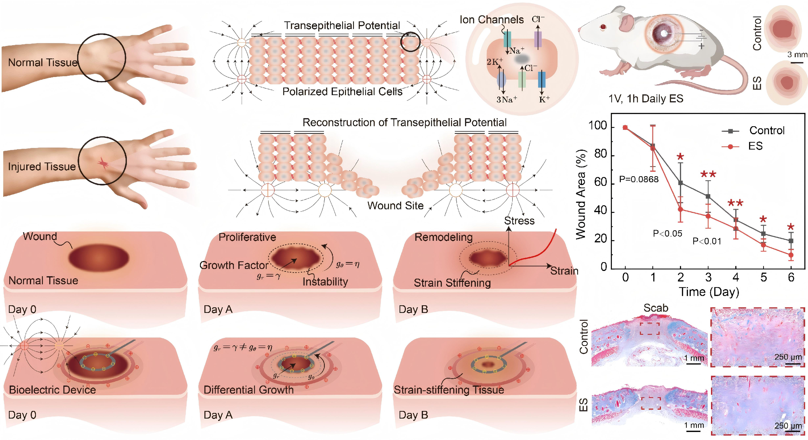
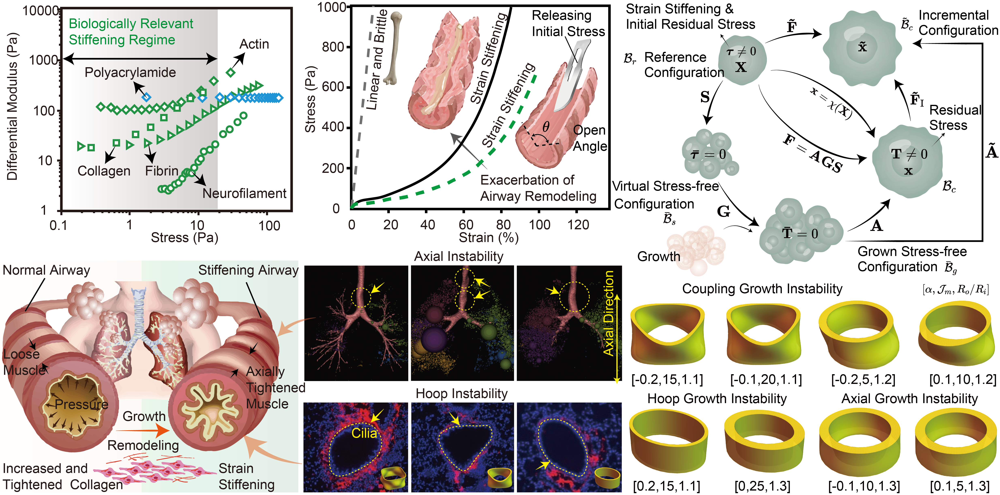

About Me
Welcome! I am Yafei Wang, Associate Professor and PhD Supervisor at Harbin Institute of Technology (HIT). I earned my Ph.D. from HIT and completed my postdoctoral research at Fudan University. Prior to my current position, I served as an Associate Research Fellow at Southern University of Science and Technology (SUSTech). My research primarily centers on solid mechanics, with a particular focus on the instability mechanics of slender structures, as well as the mathematical and physical modeling of biological tissues and soft active materials. Should you have any inquiries or interest in potential collaborations, please feel free to reach out.
Featured Research

Bioinspired hierarchical hydrogels engineered with extreme impact resistance, Yun Tan, Yafei Wang#, Pei Zhang, Jun Li, Fucheng Wang, Liangjie Shan, Jin Guo, Zongbao Wang, Ji Liu, Advanced Functional Materials, 2025, 202508034.
Abstract: The development of extreme impact-resistant materials holds significant importance across engineering applications, yet remains constrained by the inherent trade-offs among mechanical strength, toughness, and energy dissipation efficiency. Drawing inspiration from natural models, particularly the unique structural design and toughening mechanisms of the mantis shrimp's dactyl club, a kind of nanocomposite hydrogel is developed by synergistically integrating polymer elastic microspheres with enzyme-induced biomineralization. This bioinspired approach produces microsphere-reinforced nanocomposite hydrogels (MNHs) that concurrently deliver exceptional strength, remarkable fracture toughness, and unprecedented resistance to ballistic impacts, surpassing the performance of all existing high-strength hydrogels, thus underscoring their potential for protective applications. Nonlinear numerical and theoretical analyses elucidate the dynamic fracture mechanisms governing both quasi-static and high-speed impact scenarios, revealing crack deflection, microcrack nucleation, and energy redistribution as key toughening pathways. This work not only advances the fundamental understanding of bioinspired structural design principles but also establishes a universal blueprint for next-generation impact-resistant materials, unlocking new frontiers for polymer composites in mechanically demanding scenarios.

Electroactive differential growth and delayed instability in accelerated healing tissues, Yafei Wang, Zhanfeng Li, Xingmei Chen, Yun Tan, Fucheng Wang, Yangkun Du, Yunce Zhang, Yipin Su, Fan Xu, Changguo Wang, Weiqiu Chen, Ji Liu, Journal of the Mechanics and Physics of Solids, 2024, 105867.
Abstract: Guided by experiments contrasting electrically accelerated recovery with natural healing, this study formulates a model to investigate the importance of electroactive differential growth and morphological changes in tissue repair. It underscores the clinical potential of leveraging electroactive differential growth for improved healing outcomes. The study reveals that voltage stimulation significantly enhances the healing and growth of biological tissues, accelerating the regeneration process across various growth modalities and steering towards isotropic growth conditions that do not favor any specific growth pathways. Enhancing the electroelastic coupling parameters improves the efficacy of bioelectric devices, initiating contraction and fortification of biological tissues in alignment with the electric field. This process facilitates swift cell migration and proliferation, as well as oriented growth of tissue. In instances of strain stiffening at elevated strains, the extreme critical growth ratio aligns with the predictions of neo-Hookean models. Conversely, for tissues experiencing strain stiffening under moderate to very low strain conditions, the strain stiffening effect substantially delays the onset of electroelastic growth instability, ultimately producing a smooth, hyperelastic surface devoid of any unstable morphologies. Our investigation, grounded in nonlinear electroelastic field and perturbation theories, explores how electric fields influence differential growth and instability in biological tissues. We examine the interactions among dimensionless voltage, internal pressure, electroelastic coupling, radius ratio, and strain stiffening, revealing their effects on promoting growth and delaying instability. This framework offers insights into the mechanisms behind electroactive growth and its instabilities, contributing valuable knowledge to the tissue healing.

Strain stiffening retards growth instability in residually stressed biological tissues, Yafei Wang, Yangkun Du, Fan Xu, Journal of the Mechanics and Physics of Solids, 2023, 178, 105360.
Abstract: Soft biological tissues often exhibit notable strain stiffening under increasing stretch, and this can have significant effects on tissue growth and morphological development, such as causing symmetry breaking in growing airways and leading to mucosal folding and airway hyperresponsiveness. To investigate the role of strain stiffening and the multifactorial control in growth and remodeling, we consider a growing tubular structure with strain-stiffening effects caused by increased and tightened collagen. In addition, we employ the nonlinear hyperelastic Gent model and initial stress symmetry theory to include the coupling effects of differential growth and initial residual stress. Results show that for strain stiffening that takes place at higher strain, the maximum critical growth ratio matches that obtained using neo-Hookean model calculations. Meanwhile, for biological tissues that exhibit strain stiffening under moderate strain conditions, the strain-stiffening effect delays significantly the onset of growth instability. When strain stiffening takes place at very low strains, stiff biological tissues can prevent growth instability, resulting in a smooth hyperelastic cylindrical tubular structure, and the epithelial tissue remains stable at all growth stages without forming any unstable morphology. Our results suggest that strain stiffening can induce retardation instability during biological growth and remodeling, but airway remodeling can incorporate this effect by increasing wall stiffness and reducing obstruction. This highlights the importance of considering the impact of strain stiffening on biological growth and remodeling, which can inform the development of effective clinical interventions for chronic inflammatory airway diseases.